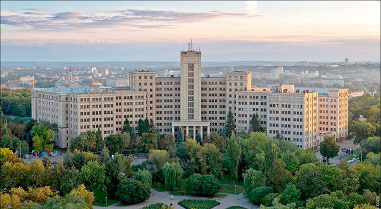

V.N. Karazin Kharkov national university
Faculty of Economics

History
The Faculty of Economics was founded in 1933 as one of the University’s seven faculties. The Faculty was created on the basis of three departments – of political economy, economic politics and historic disciplines.
Science
Teaching staff of Faculty of Economics consists of 21 professors, 41 associate, 21 Doctor of Economics, 60 PhD, 40 postgraduates, 16 candidates, 2 student.

Departments
- Department of Economic Theory and Economical Methods of Management
- Department of Statistics, Accounting and Audit
- Department of Finance and Credit
- Department of Economic Cybernetics and Applied Economics
- Department of International Business and World Economy
- Department of Economics and Management
- Department of Mathematical Methods in Economics
Contact us
- link
- contact
- youtube